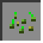
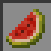
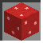
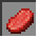
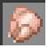
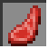
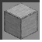
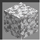

Industrious Golems
Industrious Golems is a NeoForge mod that adds work golems: golems that hold a job and produce resources directly, while you build the infrastructure around them (chests, hoppers, furnaces, crafters, minecarts) from ordinary vanilla blocks. Villagers, trading and iron golems are left exactly as they are.
 Hay GolemFarmerA slow, patient scarecrow that tends your crops.
Hay GolemFarmerA slow, patient scarecrow that tends your crops. Mushroom GolemLumberjackFells trees and replants the grove as it goes.
Mushroom GolemLumberjackFells trees and replants the grove as it goes. Terracotta GolemHerderShears, milks and keeps your pens at a sensible size.
Terracotta GolemHerderShears, milks and keeps your pens at a sensible size. Stone GolemMinerQuarries stone and ore, one block at a time.
Stone GolemMinerQuarries stone and ore, one block at a time.How golems work
Building one
Place the golem's body block, then put a carved pumpkin or jack o'lantern on top. The pumpkin is consumed, the body block becomes the golem's chest, and the golem stands on it. You do not need a chest first: the pattern makes one. The golem is bound to that chest and starts dormant.
The chest
Each golem has its own 27-slot chest, which is its job site. It deposits what it produces there and restocks its supplies from it. The chest is craftable (a chest, the golem's old job block and its body block) so you can move one, and it never joins into a double chest.
Charge and offerings
Golems work bare-handed, day and night, but only while charged. A new golem is dormant until you give it something it craves: right-click it with the item. Each kind has eight offerings, uncommon finds from different biomes, structures and mobs, and it craves one at a time. One offering is worth 45 minutes of work; a golem stores two. The more golems you run, the more offerings you need, which means going out exploring.
One stack at a time
A golem has no inventory. It breaks a block, shears or milks, and the result drops in the world as it would for a player. It picks up one stack in its hand, carries it to its chest and goes back for the next. Supplies (seeds, saplings, buckets, feed) come out of the chest the same way.
The golems
| Golem | Role | Body block | Uses | Produces |
|---|---|---|---|---|
| Hay Golem | Farmer |  Hay Bale Hay Bale |  |       |
| Mushroom Golem | Lumberjack |  Red Mushroom Block |  |    |
| Terracotta Golem | Herder |  Terracotta (any colour) Terracotta (any colour) |  |       |
| Stone Golem | Miner |  Smooth Stone | – |       |
About this wiki
The source and issue tracker are on GitHub. Item links go to the Minecraft Wiki.